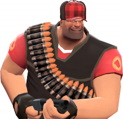

Site Purpose
This site's purpose is to provide weather information for the people who want to enjoy outdoor activities and plan for such activities, suach as hunting or surfing.
Audience Description
The expected audience description for this site is to made of outdoorsmen. What I mean by this is that people who wish to have fun outdoors or plan family trips will be the main viewers. For the outdoor sportsmen/women, this site will contain information about how the weather will be by the hour. This will allow them to prepare for their events. For family trips, the same information will apply. Most of these people will be financially well off, allowing them to travel around. Families will need this site to prepare their materials like sunscreen in order to be ready for the weather of their destinations.
User Persona
Mr. Heavy is a 34 year old man with an avid love for hunting. He loves to go to the northern reaches of Ohio, as the best game can be found up there. However, he continues to worry about how much warmth he needs to bring to his hunting stand. With this website, Mr. Heavy can prepare for the most likely outcome when preparing for the hunt. He spends most of his time looking for deer and other game during hunting season (which can vary. For example, in Michigan dates range from April 1st to May 31st for different animals) while during every day that he doesn't hunt, he spends his time working as a lumberjack cutting trees with his favorite tool the chainsaw (he even has name for it: Sasha). Since he uses his phone in order to call around and as a GPS, Mr. Heavy uses data in order to not get lost and also uses apps that'll allow him to find areas where game have been found. Quote: Let's Git 'er Done!
Wireframe Drafts
Draft for small screens

Draft for a tablet screen

Draft for a Browser

Peer Review and Results
There was a lot of help in the feedback from everyone. Johnathan Spencer was able to help me figure out how I could show what I wanted the screen to look like by using a blue background to show what would be shown on the screens for mobile, tablet and browser views. This helps me to know what should be showing when I load the page and whether I would have the ability to scroll horizontally if needed.